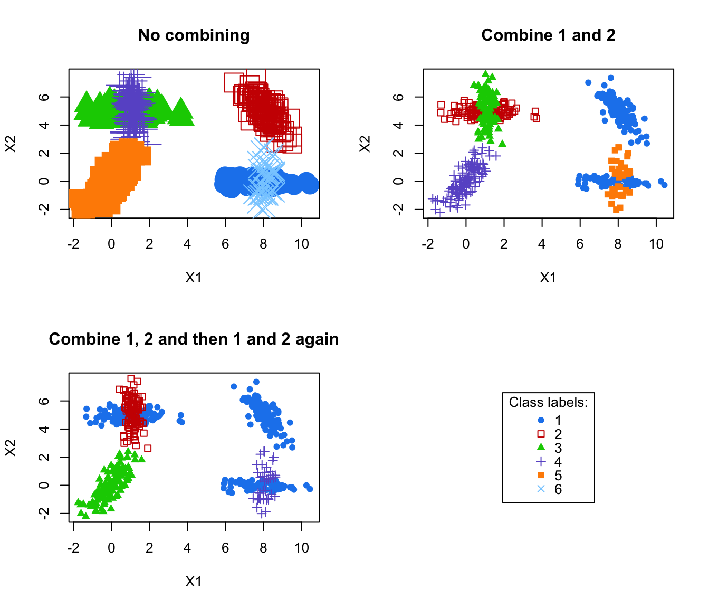

combiPlot.RdPlot classifications corresponding to successive combined solutions.
combiPlot(data, z, combiM, ...)The data.
A matrix whose [i,k]th entry is the probability that observation i in the data belongs to the kth class, for the initial solution (ie before any combining). Typically, the one returned by Mclust/BIC.
A "combining matrix" (as provided by clustCombi), ie a matrix whose kth row contains only zeros, but in columns corresponding to the labels of the classes in the initial solution to be merged together to get the combined solution.
Other arguments to be passed to the Mclust plot functions.
Plot the classifications obtained by MAP from the matrix t(combiM %*% t(z)), which is the matrix whose [i,k]th entry is the probability that observation i in the data belongs to the kth class, according to the combined solution obtained by merging (according to combiM) the initial solution described by z.
J.-P. Baudry, A. E. Raftery, G. Celeux, K. Lo and R. Gottardo (2010). Combining mixture components for clustering. Journal of Computational and Graphical Statistics, 19(2):332-353.
# \donttest{
data(Baudry_etal_2010_JCGS_examples)
MclustOutput <- Mclust(ex4.1)
MclustOutput$G # Mclust/BIC selected 6 classes
#> [1] 6
par(mfrow=c(2,2))
combiM0 <- diag(6) # is the identity matrix
# no merging: plot the initial solution, given by z
combiPlot(ex4.1, MclustOutput$z, combiM0, cex = 3)
title("No combining")
combiM1 <- combMat(6, 1, 2) # let's merge classes labeled 1 and 2
combiM1
#> [,1] [,2] [,3] [,4] [,5] [,6]
#> [1,] 1 1 0 0 0 0
#> [2,] 0 0 1 0 0 0
#> [3,] 0 0 0 1 0 0
#> [4,] 0 0 0 0 1 0
#> [5,] 0 0 0 0 0 1
combiPlot(ex4.1, MclustOutput$z, combiM1)
title("Combine 1 and 2")
# let's merge classes labeled 1 and 2, and then components labeled (in this
# new 5-classes combined solution) 1 and 2
combiM2 <- combMat(5, 1, 2) %*% combMat(6, 1, 2)
combiM2
#> [,1] [,2] [,3] [,4] [,5] [,6]
#> [1,] 1 1 1 0 0 0
#> [2,] 0 0 0 1 0 0
#> [3,] 0 0 0 0 1 0
#> [4,] 0 0 0 0 0 1
combiPlot(ex4.1, MclustOutput$z, combiM2)
title("Combine 1, 2 and then 1 and 2 again")
plot(0,0,type="n", xlab = "", ylab = "", axes = FALSE)
legend("center", legend = 1:6,
col = mclust.options("classPlotColors"),
pch = mclust.options("classPlotSymbols"),
title = "Class labels:")# }
